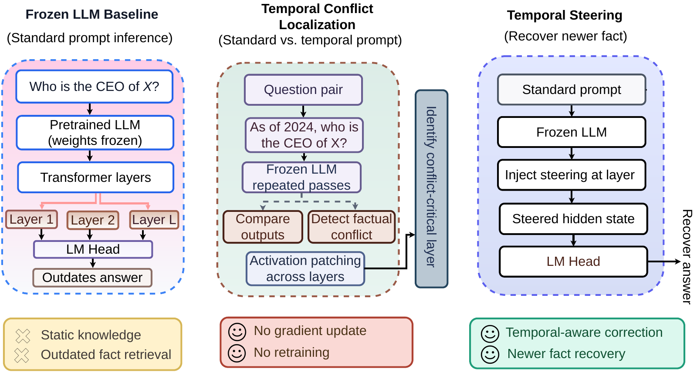

TAS: Temporal Attractor Steering for Open-Weight Language Models
Elias Hossain1,∗, Sourav Saha1,∗, Tasfia Nuzhat Ornee1, Sanjeda Sara Jennifer1, Umesh Chandra Biswas2, Shubhashis Roy Dipta3, Rajib Rana4, Niloofar Yousefi1
1University of Central Florida · 2Mississippi State University · 3University of Maryland, Baltimore County · 4University of Southern Queensland
∗Equal contribution
Open-weight LMs often return an outdated fact even when the newer one is stored and recoverable. We characterize this Parametric Temporal Conflict as a localized representational preference — not missing knowledge — and resolve it at inference time by steering residual-stream activations, retrieval-free and training-free.
Language models are trained on corpora spanning many years, so a model often encodes both an earlier fact and its later replacement — an older CEO and a newer CEO, an earlier head of state and a later one. Under standard prompting the model surfaces the outdated answer, but a simple temporal cue (“As of 2024, who is…”) reveals the newer fact is already recoverable from parametric memory. We call this Parametric Temporal Conflict (PTC): the right knowledge is in the network, but the default forward pass favors the older basin.
⊘
Not absence
A knowledge-recovery filter separates true PTC from cases where the model simply never learned the newer fact. Without it, raw PTC rates aggregate two failure modes with opposite implications.
↑
Scales with capacity
Filtered PTC rises monotonically with parameter count (0.041 → 0.103 across Qwen-1.5B, Qwen-7B, Mistral-7B, Llama-3.1-8B). Bigger models retain more outdated facts, not fewer.
◎
Localized in the network
A single-layer single-token activation patch at the conflict-critical layer flips the answer on 72–85% of verified PTC instances — direct evidence of a recoverable temporal circuit.
Method
How TAS works
TAS is a three-stage inference-time pipeline: detect a likely conflict with a lightweight probe, locate a conflict-critical layer once per model via causal activation patching, and steer the hidden state toward the newer-fact direction with a precomputed Δ. No retraining, no retrieval, no weight edits.

Figure 1. Overview of Parametric Temporal Conflict (PTC) and Temporal Attractor Steering (TAS). (A) Standard prompting retrieves an outdated answer from parametric memory. (B) Conflict localization compares standard and temporally cued prompts and identifies a conflict-critical layer ℓ* through activation patching. (C) Temporal steering shifts the hidden state toward the newer-fact representation without retrieval or retraining.
1
Detect
A linear probe trained on verified PTC positives scores the hidden state at ℓ*. If the calibrated score c ≤ τ, the forward pass is left untouched; otherwise the query is passed to the steering stage.
2
Locate
For each layer ℓ we measure the answer-flip rate induced by patching the temporal-prompt activation into the standard-prompt forward pass at the last prompt token. The conflict-critical layer is ℓ* = argmaxℓ AFR(ℓ).
3
Steer
At ℓ* we apply h′ = h + α · c · Δ, where Δ averages the activation gap between temporal and standard prompts over verified PTC instances. A per-relation Δ (V2) dominates global and per-domain variants.
∎
Theoretical handles
Under Parametric Co-encoding, Local Separability, and a Bounded-Steering condition, there exists α* > 0 such that TAS provably flips the inequality defining PTC, while leaving non-conflict queries unchanged.
Results
Verified evaluation across four open-weight LMs
We evaluate on an 8,746-record verified benchmark mined from Wikidata, spanning five superseding-update relations (head of state, head of government, CEO, head coach, chairperson). All four models exhibit PTC on this benchmark, all four have a recoverable conflict-critical layer, and end-to-end TAS recovers a substantial fraction of PTC cases while preserving non-conflict behavior.
Model
Peak AFR
ℓ*
Recovery
PA (clean)
Δ vs ITI
Qwen-2.5-1.5B
0.723
23 / 28
0.392
0.987
+0.142
Qwen-2.5-7B
0.851
23 / 28
0.569
0.948
+0.152
Mistral-7B-v0.3
0.824
30 / 32
0.288
0.936
−0.056
Llama-3.1-8B
0.816
31 / 32
0.374
0.849
+0.050
Table 1. End-to-end TAS (V2 per-relation Δ) at each model's selected operating point. Peak AFR is single-layer single-token activation patching at ℓ*; Recovery is the fraction of PTC cases TAS flips to the newer fact; PA is preservation accuracy on matched non-conflict records; Δ vs ITI compares Recovery against a matched ITI baseline that shares ℓ* and α-sweep but uses a behavioural-contrast Δ. TAS leads on three of four models.
★
Capacity scaling
Filtered PTC rate scales monotonically with parameter count: 0.041 (Qwen-1.5B) → 0.071 → 0.085 → 0.103 (Llama-3.1-8B). The phenomenon is not a small-model artefact.
⤳
Verified-conflict Δ beats ITI
Building Δ from instances where the model demonstrably defaults to outdated and recovers under temporal elicitation gains +0.05 to +0.15 Recovery over ITI's population-level contrast on three of four models, at matched PA.
⊙
Conflict-gated, not always-on
The detector gate sacrifices only 0.005–0.048 Recovery vs. an oracle that steers every verified PTC case, while keeping non-conflict queries within 1% of clean argmax on the strongest model.
Quick Start
Run TAS in minutes
Load an open-weight base LM, point the pipeline at a PTC record, and apply the precomputed steering vector at the model's conflict-critical layer.
1
Clone & install
Pull the repo and install the inference-time dependencies. No fine-tuning, no retraining.
2
Load the PTC benchmark
Pull the 8,746-record verified dataset from HuggingFace and select a model from configs/models.yaml.
3
Steer at inference
Call tas.evaluate(record, model) — the detector, locator, and steering vector are loaded automatically per model family.
install.shBash
# Clone the repository
git clone https://github.com/eliashossain001/temporal-attractor-steering.git
cd temporal-attractor-steering
pip install -e .
# Pull the verified PTC benchmark
huggingface-cli download EliasHossain/ptc-benchmark \
--repo-type dataset \
--local-dir data/ptc-benchmark/
steer.pyPython
from tas importload_model, TASPipelinefrom datasets importload_dataset# Load any of the four evaluated open-weight base LMs
model, tokenizer = load_model("Qwen/Qwen2.5-7B")
# Pipeline auto-loads per-model l*, alpha*, tau*, and Delta
tas = TASPipeline.from_pretrained(
model, tokenizer,
variant="V2", # per-relation Delta
tau=0.15,
alpha=2.0,
)
records = load_dataset("EliasHossain/ptc-benchmark", split="test")
for r in records:
out = tas.evaluate(r)
# out.steered in {True, False}; out.answer is the post-steering predictionprint(r["query"], "=>", out.answer,
"(steered)"if out.steered else"(passthrough)")
Benchmark
The PTC benchmark
8,746 verified records mined from Wikidata, spanning five superseding-update relations across politics, corporate, and sports domains. Each record carries a verified (aold, anew, tupdate) triple with non-overlapping validity windows and both standard and temporally cued prompts.
License notice. The PTC benchmark is built from publicly available Wikidata superseding-fact triples. By using this dataset you agree to use it solely for research on parametric memory, temporal reasoning, and inference-time intervention, and to respect the dataset card on HuggingFace. See the dataset card for the full release terms.
Citation
Cite TAS
If you find TAS or the PTC benchmark useful in your research, please consider citing the paper.
@article{hossain2026tas,
title = {Right Knowledge, Wrong Answer: Characterizing Parametric
Temporal Conflict in Open-Weight Language Models},
author = {Hossain, Elias and Saha, Sourav and Ornee, Tasfia Nuzhat
and Jennifer, Sanjeda Sara and Biswas, Umesh Chandra
and Dipta, Shubhashis Roy and Rana, Rajib and Yousefi, Niloofar},
year = {2026},
journal = {arXiv preprint arXiv:2606.20959},
eprint = {2606.20959},
archivePrefix = {arXiv},
note = {Code: \url{https://github.com/eliashossain001/temporal-attractor-steering}
Dataset: \url{https://huggingface.co/datasets/EliasHossain/ptc-benchmark}},
}